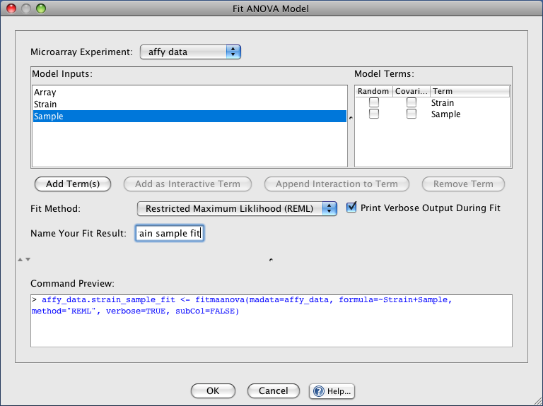

In order to fit an ANOVA model select the Analysis->Fit ANOVA Model... menu item which will show you a graphical interface to R/maanova's fitmaanova(...) function.

Model Fitting
Microarray Experiment: the experiment data to fit. See help documentation for loading tab-delimited data or Affymetrix data.
Model Inputs: the model inputs are a list of terms from the experiment's design file.
Model Terms: the model terms that will be fit. You can also indicate that a term is Random or Covariate by selecting the respective checkbox
Add Term(s): adds selected inputs to the Model Terms list as additive terms. This button will only be enabled if at least one input is selected.
Add as Interactive Term: adds two selected inputs as an interactive model term.
Append Interaction to Term: appending an interaction will create an interactive term by adding the selected input on the left to the selected additive term. The new interactive term will appear in the Model Terms list with a colon ':' separating the interacting terms.
Remove Term: removes the selected term from the list of Model Terms to be fit
Fit Method: determines if the fit is performed using the Maximum Liklihood (ML) or Restricted Maximum Likelihood (REML) algorithm
Print Verbose Output During Fit: determines if verbose status messages will be printed to the R output window at the bottom of the screen
Name Your Fit Result: the name to use for your fit result (this name will appear in your projects data tree)